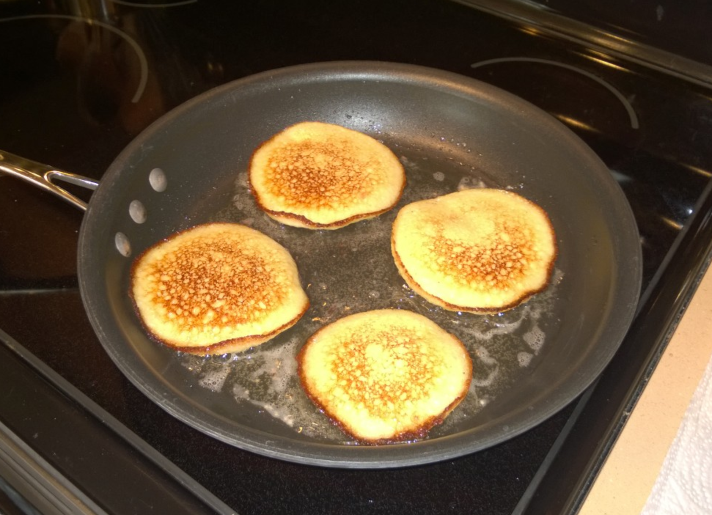

Potato Pancakes (v)

Ingredients
- 2 C cubed potatoes (~1 lb)
- 2 eggs
- ½ medium onion
- 2 cloves garlic
- 2 tbs potato starch
- ½ tsp baking powder
- Salt and pepper, to taste
- Scallions (optional)
Directions
- Mix: Place all ingredients in a food processor and purée until smooth.
- Fry: Heat oil in a frying pan. Add about ¼ C of the potato mixture per portion and cook like pancakes until golden, about 2-3 minutes per side.
- Cool: Transfer to a wire rack to cool slightly.
- Serve: Serve with caviar, sour cream, and rinsed red onions.
The Gumbo Page
Michael Fritsche
mbf@fritsche.org